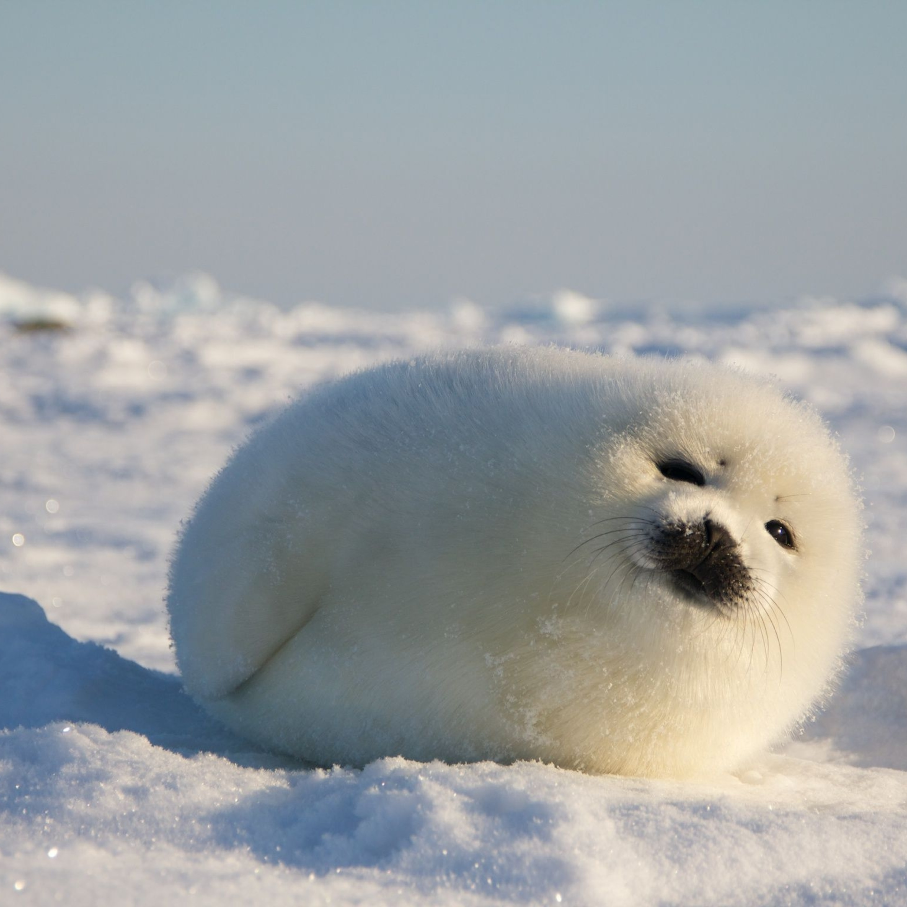
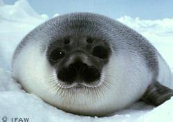
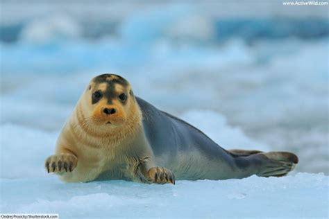
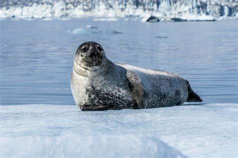

Hello! this is a seal.
Ough!
Now I will show u some seal species for funsies
Enjoy!

This is a hooded seal! It is very cute as you can see.
Sadly enough these little guys are considered vulnerable because of overhunting until the 2000's they were hunted mainly in Norway, Russia and Canada for their pelts. Maimly the juveniles which were called "Bluebacks". Also it is noted that some governments subsidized these seal hunts.

This is a bearded seal, They have beards !!!!!!
Bearded seals are not considered endangered but are still threathened by humans.
They live in the arctic and are negatively impacted by the climate change around the arctic circle. Oil and gas extraction operations also threathen their habitats and food sources.

Say hi to the harp seal #hi.
Harp seals are also considered not endangered and they also hang around the arctic circle.
The fact that there are people who hunt seals is pissing me off I'll continue this someday.